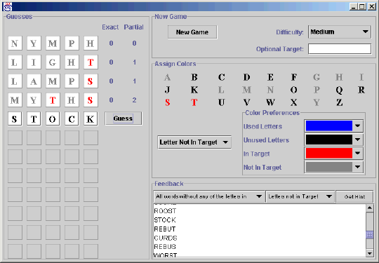

|
|||||||||
| PREV PACKAGE NEXT PACKAGE | FRAMES NO FRAMES | ||||||||
See:
Description
| Interface Summary | |
|---|---|
| IGuessEvaluator | Evaluate a guess made by the user against the target word. |
| IHintData | Get the data needed by the hint classes to generate the hints. |
| IWordList | Classes implementing IWordList provide a list of
word-difficulty pairs (Word objects). |
| IWordPredicate | Classes implementing IWordPredicate.isOK(Word w). |
| Class Summary | |
|---|---|
| Guess | Represent one guess that has been made: the word guessed, and the number of exact and partial matches between that word and the target word. |
| Hint | A Hint object is used to specify one kind of hint to a Jotto player. |
| JottoGUI | A graphical user interface for the game of Jotto. |
| JottoModel | JottoModel plays a game of Jotto. |
| MatchCount | MatchCount objects report how many exact and partial matches are contained in a pair of words. |
| SampleGuessEvaluator | A sample implementation of the guess evaluator. |
| SampleHintConsistentWithGuesses | Provide a hint consisting of words that are consistent with all previous guesses by the user. |
| SampleHintContainsLetter | Provide a hint consisting of all the words that contain a letter specified by the user. |
| SampleHintWithAllLetters | Provide a hint consisting of words that contain all of the letters specified by the user. |
| SampleHintWithoutLetter | Provide a hint consisting of words that do not contain the letter specified by the user. |
| SampleHintWithSomeLetters | Provide a hint consisting of words that contain some of the letters specified by the user. |
| SampleWordList | A list of words that can grow as needed. |
| Word | Store one word together with its difficulty. |
Jotto is a game program where students may contribute some of the code. The program is partitioned into pieces that may be individually implemented, giving students and instructors a rich set of assignment possibilities. The completed game looks like this:

Rules
Jotto is similar to a word-based version of “Mastermind.”
The computer chooses a “target” word for the user to guess. The word has five letters; letters may be repeated. The user attempts to guess the target word by guessing five letter words. For each guess, the computer will tell the number of exact matches and the number of partial matches. An exact match occurs when the same letter appears in the same position in both the guessed word and the target word. A partial match occurs when the same letter appears in both the target and the guess but in different positions. Any given letter is only reported once; it can't be both an exact match with one letter and a partial match with another. Exact matches have priority over partial matches.
Examples:
Word Pairs Exact Partial louse
purse2 exact matches (s and e) 1 partial match (u) queue
queer3 exact matches (q, u, and e) 1 partial match (the last e) queue
feats0 exact matches 1 partial match (e)
Running the Program
The program may be run with the following main method:
import becker.xtras.jotto;
public class DemoJotto extends Object
{ public static void main(String[] args)
{ JottoModel model = new JottoModel();
JottoGUI ui = new JottoGUI(model);
}
}
This main does not incorporate any student-written code and it will not display
any hints. The following main method will display a complete implementation.
The classes beginning with Sample may be replaced with student-written code.
import becker.xtras.jotto;
public class Main extends Object
{
public static void main(String[] args)
{ IWordList wordList = new SampleWordList();
IGuessEvaluator guessEvaluator = new SampleGuessEvaluator();
JottoModel model = new JottoModel(wordList, guessEvaluator);
model.addHint(new SampleHintContainsLetter());
model.addHint(new SampleHintWithoutLetter());
model.addHint(new SampleHintWithAllLetters());
model.addHint(new SampleHintWithSomeLetters(3));
model.addHint(new SampleHintConsistentWithGuesses(guessEvaluator));
JottoGUI ui = new JottoGUI(model);
}
}
where WordList, Eval, and HintContainsLetter are
student-written classes implementing the provided interfaces IWordList, IGuessEvaluator, and
extending Hint, respectively. See the Hint documentation for sample code for HintContainsLetter.
The jotto package contains the classes SampleWordList
and SampleGuessEvaluator for those who want to
implement only a subset of these classes.
|
|||||||||
| PREV PACKAGE NEXT PACKAGE | FRAMES NO FRAMES | ||||||||